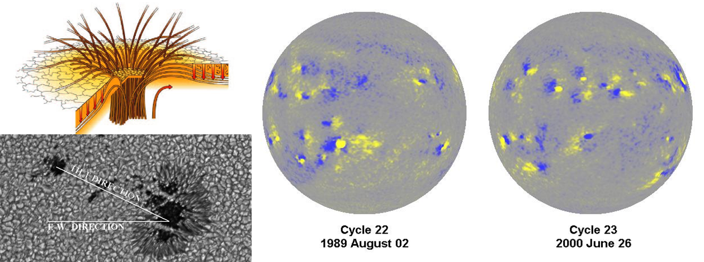
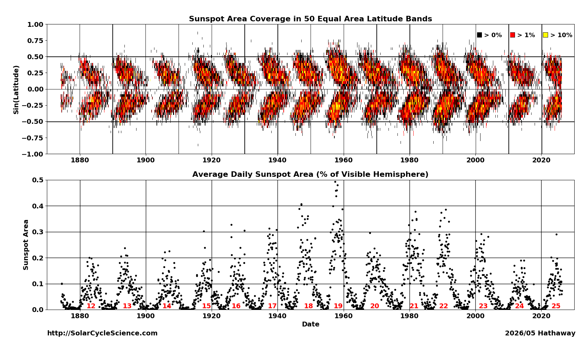

Solar Magnetism
Active Regions
Active regions are areas of intense magnetic field lines emerging from the Sun's interior, manifesting as sunspots, solar flares, and coronal mass ejections.
Active regions have magnetic field strengths several thousand times stronger than Earth's magnetic field. Sunspots — the dark patches observed on the photosphere — mark where these strong fields restrict the convective plasma flow, holding back heat from the interior and causing these areas to cool slightly and darken.
Observations of active regions reveal several physical principles governing the solar cycle:
- Differential Rotation: Tracking sunspots historically showed the Sun rotates once in approximately 27 days (specifically a Carrington Rotation of 27.2753 days synodic).
- Bipolar Nature: active regions typically feature two main spots or groups: the leading group has one magnetic polarity, and the trailing group has the opposite polarity.
- Joy's Law: Sunspot groups are tilted; the line connecting the leading and following spots is tilted relative to the equator, with the tilt increasing at higher latitudes. The leading spots lie closer to the equator.
- Hale's Polarity Law: The leading sunspots in the northern hemisphere have opposite magnetic polarity to those in the southern hemisphere. These polarities flip entirely from one 11-year cycle to the next.

Magnetic Fields and Sunspots: (a) Magnetic loop emergence forming sunspots. (b) Typical sunspot tilt illustrating Joy's Law. (c) Opposite polarity configuration across the equator and cycles, reflecting Hale's Polarity Law.
Sunspot Observations & Calibration
Daily sunspot data started in May of 1874 compiled by the Royal Greenwich Observatory (RGO). In 1976, this responsibility shifted to the US air Force (USaF) and the National Oceanic and atmospheric administration (NOaa). To establish a continuous long-term record, solar physicist David Hathaway reformatted the USaF/NOaa data to conform to the original RGO format.
Because quantities such as sunspot area differ between networks, calibrations are required. Comparing RGO records to the uniform Mount Wilson collection (1917–1982) reveals three distinct epochs. In creating the historical Butterfly Diagram (which plots total sunspot area as a function of time and latitude), RGO Spot areas are retained prior to 1977, while Post-1976 USaF/NOaa areas are scaled up by a factor of 1.4.
Butterfly Diagram Datasets
You can download the underlying butterfly diagram data plotted as Carrington rotation bins:

Sunspot Group Database (1874–Present)
This database contains yearly files detailing the position, area, and classification of individual sunspot groups. You can download the full archive or view/download specific files by year.
Bulk Downloads & Formats
Derived Sunspot area Tables:
External Catalogs & Research Repositories
Additional datasets, automated active region tracking tools, and forecasting models.
Database Updates & Corrections
- 2025/08/17: ZIP archive containing files from 1874 through 2024 updated with the corrected date/time parameters.
- 2025/10/02: Interpolated database entries for 2025/08/24, 08/29, and 08/34 due to missing records on the NOaa Solar Region Summaries database.
- 2017/06/05: Database date/times for 1982–present corrected by +0.5 days to fix systematic 12-hour offset. added Zurich/McIntosh classifications and spot counts to columns 26–29 and 36–39.
- 2017/05/06: Relocated database from NASA/Marshall Solar Physics webpage to SolarCycleScience.com.
- 2012/04/02: Significant database updates. added records for over 120 previously omitted days, designated as zeroed values in RaW files and detailed in MissingDays.txt. Flawed umbral area data from 1977 to 1981 was removed.